广州-白云国际机场服务指南
 机场地址
机场地址
广州白云国际机场位于广州市北部，白云区人和镇和花都区新华镇交界处，目前占地18平方公里。机场距离广州市中心约28公里。
主要设施
现有三条跑道，202个客机位、43个货机位（不含FBO）。1号航站楼总面积52.3万平方米，主楼共分四层，负一层则通往地铁及停车场，一层为到达及接送机大厅，二层为到达夹层，三层为出发及候机大厅。2018年4月26日投入使用的2号航站楼及综合交通中心总建筑面积88.07万平方米，航站楼分为四层，一层为到达厅、二层为国内出发到达混流区、三层为出发厅、四层为计时酒店、两舱休息室等。
机场交通
 免费摆渡车
免费摆渡车
TI与T2场内穿梭巴士（空港快线）
高峰时段（每日06：00至08：00点、15:00至18:00点）：5分钟/班；
非高峰时段（每日08：00至15:00点、18:00至23:00点）：10分钟/班；
常规时段（每日23:00点至早06:00）：15分钟/班；
T1上车地点：T1-10号门，下车点：T1-10号门；
T2上车地点：T2-42号门，下车点：T2-42号门。
 地铁
地铁
广州地铁三号线北延段南起天河区体育西路站，经林和西，广州东，燕塘、梅花园、京溪南方医院、同和、永泰、嘉禾、龙归、人和站后到达新机场站。乘坐该线既 可直达广州市的中心城区天河区，也可以通过换乘到达广州火车南站并搭乘武广高铁及广珠城际铁路，或通过换乘其他地铁线路前往广州市的其他区域。
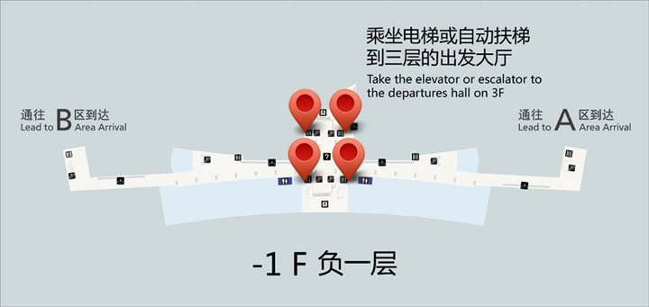
 市区大巴/机场快线
市区大巴/机场快线
白云国际机场为方便旅客来回机场与市区，开辟了5条空港快线和6条机场快线运送旅客。
市区大巴途经市内各大酒店、大型广场以及交通枢纽地，如花园酒店、粤海酒店、威尔登酒店、珠江大酒店、中信广场、海珠广场、天河客运站、广州北站等等。
市区大巴价格合理且十分舒适，更重要的是充分考虑到乘机旅客的特点，针对性的开辟直达各大酒店、广场和交通枢纽地的往返路线。十条线路平均20-30分钟一班车，以高密度车次和贴心的服务为旅客的出行提供了便捷的交通服务，极大地节省了旅客的出行时间。
空港快线一号线行车示意图【每20分钟一班】
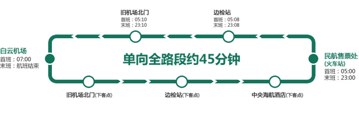
| 站点 | 具体位置 | 接驳公共交通 |
|---|---|---|
| 旧机场北门 | 位于民航医院北侧临近机场高速入口处 | 244、251、254、268、280、509、510、511、523、810、807、886等 |
| 中央海航酒店 | 临近中医学院三元里大酒店 | 24、38、58、87、101、103、105、113、124、181、182、185、186、187、244、251、254、257、265、273、280、284、523、555、805、886等，地铁三元里站 |
| 边检站 | 临近民航学院，建发广场 | - |
| 民航售票处（火车站） | 位于广州火车站东面民航售票大楼处 | 7、38、111、180、181、251、273等，旁边是广州火车站，省汽车客运站，地铁火车站 |
空港快线二号A线行车示意图【发车间隔30-45分钟一班】
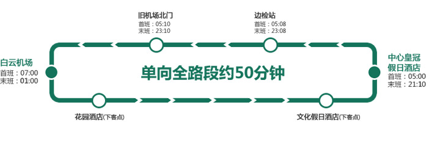
注：白云机场发车时间：07:00-19:00每45分钟一班，19:00-01:00每30分钟一班。广州中心皇冠假日酒店发车时间：05:30-06:30,20:00-21:10每30分钟一班，06:30-20:00每45分钟一班。
| 站点 | 具体位置 | 接驳公共交通 |
|---|---|---|
| 旧机场北门 | 位于民航医院北侧临近机场高速入口处 | 244、251、254、268、280、509、510、511、523、810、807、886等 |
| 边检站 | 临近民航学院,建发广场 | - |
| 花园酒店 | 越秀区环市东路368号 | 6、30、189、191、201、210、219、220、225、233、234、242、256、269、271、272、278、280、282、290、522、545、549、550、561、810、862、886等 |
| 文化假日酒店 | 越秀区环市东华侨新村光路28号 | - |
| 广州中心皇冠假日酒店 | 越秀区环市东路339号 | - |
空港快线二号B线行车示意图【发车间隔20-30分钟一班】
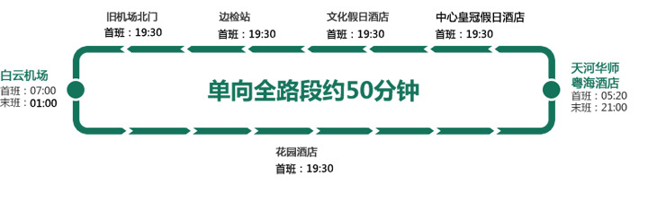
注：白云机场发车时间：07:00-01:00 每30分钟一班。华师粤海酒店发车时间：05:20-07:00 每20分钟一班，07:00-21:00 每30分钟一班。白云机场至华师粤海酒店19:30后增停花园酒店，华师粤海酒店至白云机场末班车增停文化假日酒店、广州中心皇冠假日酒店、边检站、旧机场北门。
| 站点 | 具体位置 | 接驳公共交通 |
|---|---|---|
| 天河华师粤海酒店 | 天河区中山大道西69号 | 307、522A、602、B1、B2、B3、B4、B5、B6、B9、B12、 B13、 B16、B20、B21、B25、B27等 |
空港快线三号线行车示意图【发车间隔20-30分钟一班】
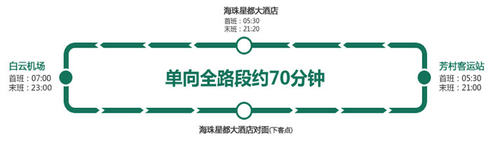
注：白云机场发车时间：07:00-22:00每45分钟一班，22:00-23:00每30分钟一班。芳村客运站发车时间：05:30-06:30，20:00-21:00每30分钟一班，06:30-20:00每45分钟一班。
| 站点 | 具体位置 | 接驳公共交通 |
|---|---|---|
| 星都大酒店 | 海珠昌岗中路172号 | 13、25、44、53、69、70、82、86、87、180、190、192、197、203、206、221、222、226、239、244、250、253、270、273、299、530、544、548、551、565、813
夜班16、20、22、23、29、32、33、36、37 等 |
| 芳村客运站 | 荔湾区环花地大道中51号 | 1、65、69、70、71、181、207、219、222、277、552、556、811、812、565、838等 |
空港快线四号线行车示意图【每45分钟一班】
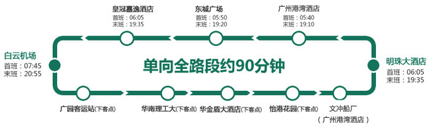
| 站点 | 具体位置 | 接驳公共交通 |
|---|---|---|
| 广园客运站 | 广园客运站对面 | 24、38、46、60、175、179、181、182、186、189、196、199、241、257、265、273、278、284、540、810、805等 |
| 华南理工 | 广园东五山路 | - |
| 华金盾大洒店 | 天河区中山大道中368号 | - |
| 皇冠嘉逸大酒店 | 天河区中山大道中483号 | - |
| 怡港花园 | 黄埔区黄埔东路168号 | - |
| 东城广场 | 黄埔区黄埔东路1号 | - |
| 文冲船厂（广州港湾酒店） | 黄埔区广新路597号 | - |
| 明珠大酒店 | 黄埔开发区（萝岗区）开发大道368号 | 242、298、516、561、883、568、572、573等 |
空港快线金沙洲线行车示意图【每小时一班】
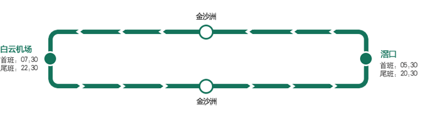
注：白云机场发车时间：07:00-22:00每45分钟一班，22:00-23:00每30分钟一班。芳村客运站发车时间：05:30-06:30，20:00-21:00每30分钟一班，06:30-20:00每45分钟一班。
| 站点 | 具体位置 | 票价（元） |
|---|---|---|
| 金沙洲（上下客点） | 白云区金沙洲藤业一路 金阳美景酒店首层 | ￥24 |
| 滘口(上下客点) | 荔湾区滘口芳村大道西623号 (广佛交界路口）金汇宾馆首层 | ￥24 |
机场快线五号线行车示意图【每15分钟一班】
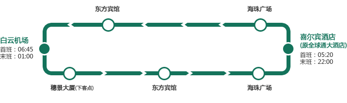
全天增加至每15分钟一班，东方宾馆35分钟可达机场，机场夜班末车延条至凌晨01:00
| 站点 | 具体位置 | 接驳公共交通 |
|---|---|---|
| 东方宾馆 | 越秀区流花路120号 | - |
| 海珠广场 | 广州市江南大道北1号 | - |
| 穗景大厦 | 白云区机场路575号 | - |
机场快线六号线行车示意图【每20分钟一班】
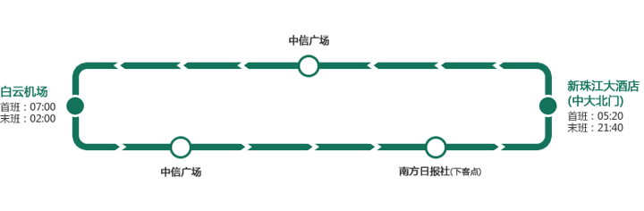
约20分钟一班,新珠江大酒店55分钟到达机场,中信广场40分钟到达机场
| 站点 | 具体位置 | 接驳公共交通 |
|---|---|---|
| 中信广场 | 天河北路233号 | - |
| 南方日报社 | 广州大道中289号 | - |
机场快线七号线行车示意图【每30分钟一班】
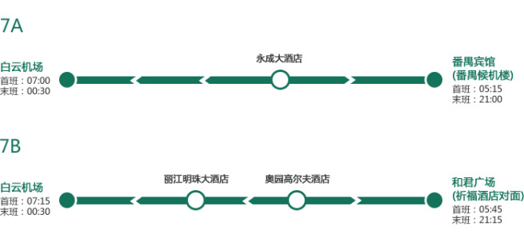
增开南国奥园候机楼,机场夜班末班车延长值凌晨00:30
| 站点 | 具体位置 | 接驳公共交通 |
|---|---|---|
| 永成大酒店 | 番禺区兴南大道1号 | - |
| 丽江明珠大酒店 | 番禺区迎宾路115号 | - |
| 奥园高尔夫酒店 | 番禺区钟村汉溪大道南国 | - |
机场快线八号线行车示意图【每30~60分钟一班】
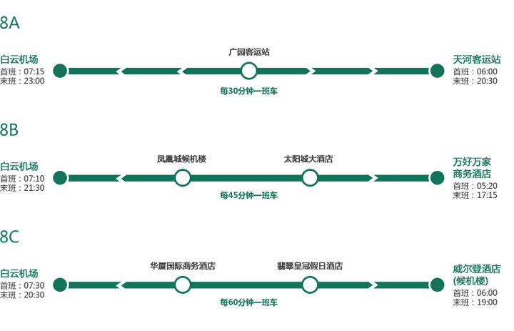
| 站点 | 具体位置 | 接驳公共交通 |
|---|---|---|
| 广园客运站 | 白云区广园中路283号 | - |
| 凤凰城候机楼 | 广州市增城市凤凰城 | - |
| 太阳城大酒店 | 增城市新塘群星路1号 | - |
| 华厦国际商务酒店 | 广州市侨光路8号 | - |
| 翡翠皇冠假日酒店 | 科学城中心区凝彩路28号 | - |
机场快线九号线行车示意图【每30分钟一班】
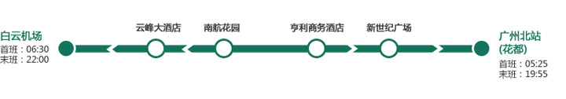
| 站点 | 具体位置 | 接驳公共交通 |
|---|---|---|
| 云峰大酒店 | 花都区镜湖路2号 | - |
| 南航花园 | 花都区新华镇新都大道103号 | - |
| 亨利商务酒店 | 花都区宝华路26号 | - |
| 新世纪广场 | 花都区秀全大道43号 | - |
机场快线十号线行车示意图【每20~25分钟一班】
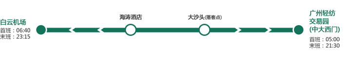
| 站点 | 具体位置 | 接驳公共交通 |
|---|---|---|
| 海涛酒店 | 黄埔大道西208号 | - |
| 大沙头 | 越秀区沿江东路464号 | - |
城市大巴
白云国际机场为方便非市区旅客来回机场，专门提供了大巴接送旅客服务。城际大巴运营线有：东莞、佛山、中山、惠州、江门、南海、清远、深圳、顺德、台山、云浮、肇庆、珠海以及广西梧州线。城际大巴车次较多，基本上每小时一班，充分满足旅客的出行需求。
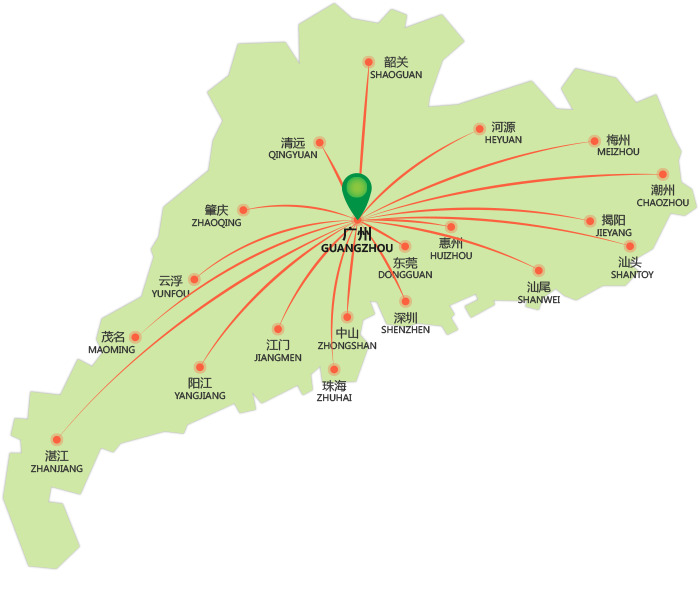
 出租车
出租车
T1航站楼：
机场到达厅外的A、B区到达通道内，均设有出租车上客点，A到达区出租车上客点设在A5号门外，B到达区出租车上客点设在B6号门外。如需乘坐出租车，请到相应的到达区出租车上客点排队候车。
出租车服务监督咨询：广州市交委服务监督电话：020-96900
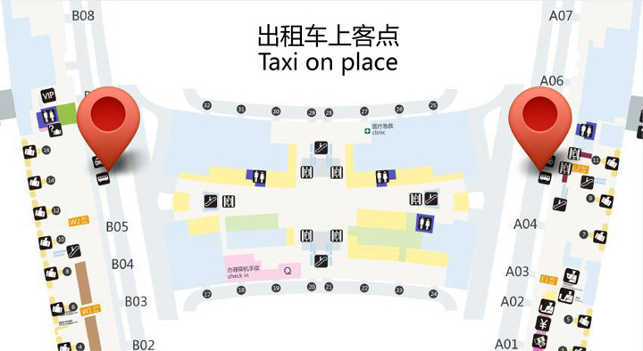
T2航站楼：
T2出租车上车点：50号门（国内），52号门（国际），出租车调度疏导是实现GTC运营的一项重要功能。对应航站楼国内到达厅和国际到达厅出口，设有国际旅客出租车候车区、上客区和国内旅客出租车候车区、上客区。其中国际旅客出租车上客区设有出租车上客车位18个，国内旅客出租车上客区设有出租车上客车位20个。
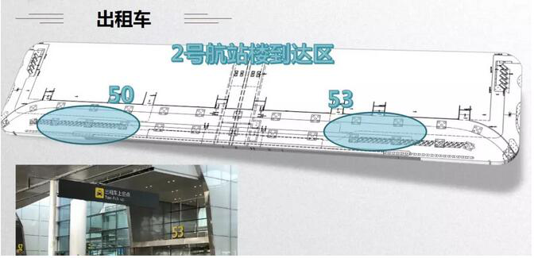
 停车服务
停车服务
T1航站楼：
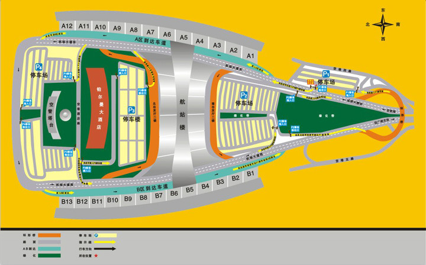
一、各停车场功能分区
P1（A区停车场）:
功能：主要服务A区到达区的接客车主，如果客人是从A区到达，则最好选择A区停车场。
位置：从机场高速进入机场范围内的靠右手边第一个停车场，车位宽裕，步行到A到达厅不超过1分钟，设有洗手间。
P2（南停车场）：
功能：主要服务于送客车主，如果是送客则停放在该处，最为方便。
位置：从机场高速进入白云机场，靠左手边中间位置，航站楼前面，由于位置适中，大部分到达机场的车主会首先在南停车场停车。同时南停车场利用航站楼南引桥底开设了临时上下客区域，车主可把车辆开进临时上下客区域，可避免日晒雨淋，从此地进入航站楼大厅也仅有数步之遥。南停车场内设有洗手间、休息区等。
P3（停车楼）：
功能：主要服务于过夜停车车主。
位置：过了航站楼往北走，在航站楼和铂尔曼酒店之间。停车楼共有三层，其中地上两层，地下一层。地上两层常年停车量较多，常日里也达七八成，而地下一层基本是节假日高峰才停满。停车楼设有电梯，从南面的电梯出来后即可到达航站楼北连接桥，进入到达厅也仅有数步之遥。停车楼不同楼层和各个通道之间实行分区分色，有显眼的指示标志，且车位带编号，车主只需记住区域和编号就可方便地停车、找车。
P4（北停车场或B区停车场）：
功能：主要服务A区和B区停车接客车主，节假日停车高峰时自驾车出行车主的后备选择。
位置：过了候机楼往北走，在机场塔台后面，约有三分之一的区域划作大中巴停车场。由于离航站楼较远，北停车场所停车辆不多。北停车场东西各建有一座连接东三、西三指廊的人行天桥，在北停车场可直达东三（A区）、西三（B区）到达厅。
二、停车指引
到机场停车，可分为三种类型，一是送机停车，二是乘机停车，三是接机停车。不同类型的停车有不同的指引。
送机停车：
1、如只需将客人送到航站楼，则车主到达机场后，直接将车开到航站楼出发厅（航站楼南桥上）下客，车辆不用进入停车场。
2、如需陪同客人办理手续等，建议把车开进南停车场（P3），停车后再一同进入航站楼（P4）。南停车场设计功能是服务短期停车，停上三五小时收费二三十元。
乘机停车：
如需出行停车，建议把车停进停车楼（P3），一来停车楼实行全封闭管理，过夜停车更有保障；二来停车时间较长，可避免爱车日晒雨淋。既然停车楼与停车场实行同一收费标准，当然要为爱车提供更好的保障。
接机停车：
如自驾车到机场接机，请先明确所接客人是在A到达区还是B到达区。
1、到达机场后，如所接客人尚未到达，建议将车辆开进南停车场（P2）等候。客人到达后，再开车进入A到达区或B到达区接载，即可方便快捷地接到客人，也避免了在A、B到达区内长时间停留而导致高收费。
2、如不想进入A、B到达区接载客人，也可将车辆开进北停车场（P4）,如所接客人在A到达区，车主可通过北停车场东连接桥进入A到达区接上客人后再回北停车场取车；如所接客人在B到达区，车主可通过北停车场西连接桥进入B到达区接上客人后再回北停车场取车。
3、如所接客人在A到达区，车辆又不想进入A到达区，还可将车辆开进A区停车场（P1），车主可步行到A到达厅接上客人后步行返回A区停车场（P1）取车。
白云机场在航站区南、北两边均设有停车场，分别为P1、P2、P4停车场和P3停车楼，总面积约16万平方米，共有停车位4323个多个。
| 序号 | 区域 | 面积（平方米） | 车位数量 | 备注 |
|---|---|---|---|---|
| 1 | A区停车场（P1） | 13800 | 384 | - |
| 2 | 南停车场（P2） | 40800 | 1254 | - |
| 3 | 停车楼（P3） | 51000 | 1273 | - |
| 4 | 北停车场（P4)（又名B区停车场） | 52000 | 1412 | 大巴车位122个 小车位1290个 |
| 合计 | 157600 | 4323 | - | |
收费标准
一、机场停车场与停车场楼
机场南北停车场和停车楼实行统一收费标准，具体为：
| 停放时间\车辆类型 | 前15分钟内 | 2小时内 | 2小时后 | 10小时以上24小时以内 | 超过24小时 |
|---|---|---|---|---|---|
| 小型机动车 | 免费 | 10元/小时 | 5元/小时 | 按10小时计，即60元/天 | 按标准累加收费 |
收费举例：停车3小时收费10+10+5=25元，停车一天收费10×2+5×8=60元。停车两天收费60+60=120元。大型机动车按实际占用车位情况收费。
二、AB到达临时接客通道
AB到达临时接客通道不是停车场，仅为接机车辆临时上客的通道。由于通道容量有限，通道内实行的是"惩罚性"收费标准，以经济杠杆缩短车主的停留时间。因此，车主切莫在AB到达临时接客通道长时间停车。
| 序号 | 时间段 | 收费标准 |
|---|---|---|
| 1 | 前10分钟 | 免费 |
| 2 | 超过10分钟至15分钟 | 5元 |
| 3 | 超过15分钟至20分钟 | 10元 |
| 4 | 超过20分钟至25分钟 | 15元 |
| 5 | 超过25分钟至30分钟 | 20元 |
| 6 | 超过30分钟至35分钟 | 40元 |
| 7 | 超过35分钟至40分钟 | 80元 |
T2航站楼：
配套T2启用，白云机场新增P6（东停车场）、P7（西停车场）、P8（A、B停车楼）三个停车场，新增停车位5127个，与1号航站楼5个停车场的总容量基本齐平。至此，白云机场停车场增至8个，停车位数量达10694个，每逢节假日出行高峰就会"停车难"的问题将得到有效缓解。
新增的P6、P7、P8停车场位于2号航站楼的南面。其中P6、P7为室外停车场，共有停车位1356个，P8为停车楼，约有停车位3771个。三个停车场共用3个入口和2个出口，2个入口位于出港高架上桥位的西侧，另外1个入口连接出港高架的引桥（可直达P8停车场四楼），出口位于出港高架下桥位的东侧。所有进出T2停车场的车辆，统一由东入口进场西出口出场。
2号航站楼的停车收费与1号航站楼保持同一标准，露天停车场与停车楼都是前15分钟免费，24小时内进入的车辆限享受两次免费时段。具体为：
| 停放时间 | 前15分钟内 | 前2小时 | 第3至10小时 | 第10至24小时 | 超过24小时 |
|---|---|---|---|---|---|
| 小型机动车 | 免费 | 每小时10元 | 每小时5元 | 按10小时计，收费60元 | 按标准累加收费 |
| 大型机动车 | 免费 | 每小时15元 | 每小时10元 | 按10小时计，收费110元 | 按标准累加收费 |
注：不足1小时按1小时计，大型机动车按实际占用车位情况收费。
收费举例：停车3小时收费10+10+5=25元，停车一天收费10×2+5×8=60元。停车两天收费60+60=120元。
按照计划，2号航站楼启用后将在停车场设置专门的网约车候客区，让网约车定点接单接客。
自2017年4月20日起，白云机场所有停车场，24小时内进入的车辆仅限享受两次免费时段，第三次（含）以后进入的车辆不享受免费时段（进场即时收费）。
三个停车场位于T2航站楼的正南方向，从一楼GTC入口或者二层连接楼可依次到达P8、P6、P7。
紧急电话
T1航站楼：
白云机场客服呼叫中心： 020-96158
白云机场投诉电话： 020-96158
白云机场投诉邮箱： service@gdairport.com
航站楼警务室： 020-86137273（07：00-22：00）
航站楼医务室： 020-36066926/020-86133851
机场火警电话： 020-36063119
行李寄存电话： 020-36066859
机场行李查询： 020-36066763（国内）020-86130102（国际）
南航行李查询： 020-86122921
T2航站楼：
白云机场服务热线： 020-96158
航站楼警务室： 020-86137273（07：00-22：00）
火警电话： 020-36063119
医疗急救： 020-36066926
急救中心（东南工作区））： 020-36062664, 020-86122926, 120
空港快线查询： 020-86122102
失物招领电话： 020-96158
行李寄存电话： ——
机场海关： 020-81101991
白云机场的士拒载和乱收费投诉电话： 020-96900/96122
中国邮政（待定）： 020-36067460
航空快递： 020-36070051
顺丰速运： 13924292441
机场行李査询： 020-36066763(国内) 020-86130102(国际)
南航行李査询： 020-86122921(国内) 020-86122913(国际)
机场检验检疫： 020-36066924
机场边防检查： 020-36066950
机场货运查询： 020-36066999
南航货运查询： 95539、020-86138533